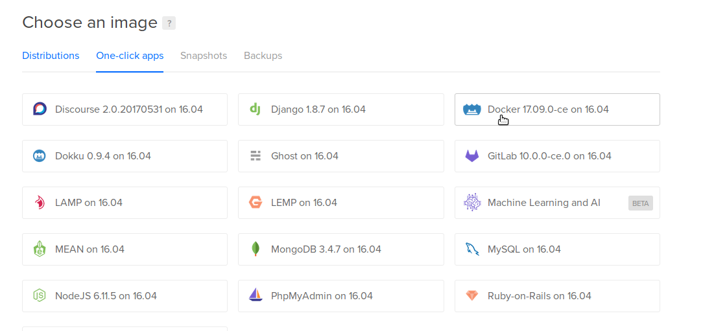
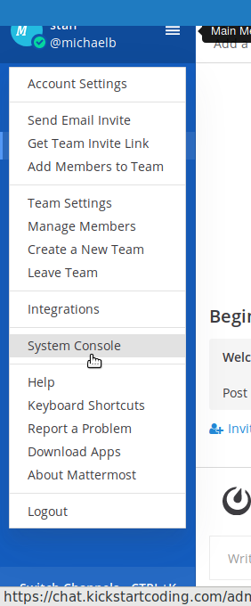
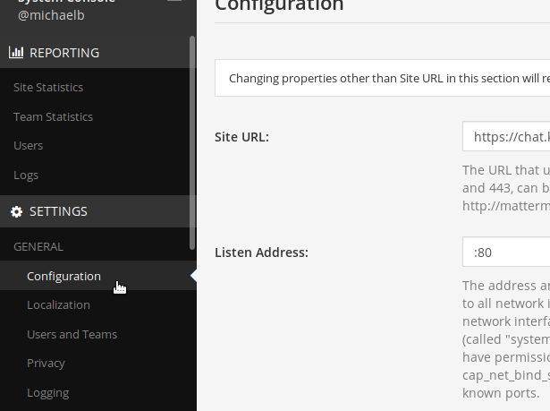

Mattermost is a popular free software Slack alternative. Slack can get really expensive really quickly for organizations of any sufficient size, so you either bare with the extremely limited free plan (which holds your data "hostage"), or you switch over to a free alternative like Mattermost. With this, instead of forking over cash for Slack, you can run your own for as cheaply as $5 a month.
Digital Ocean is my preferred hosting service. It's similar to Amazon's AWS, but has a much cleaner and simpler interface, and easy to understand pricing scheme ($5 a month). If you haven't signed up yet, you can via my affiliate link which will give us both $10 of credit.
Installation of Mattermost is pretty easy on Digital Ocean, as I found out. I in turn used these two guides using their Docker Compose setup. Let's get started!
1. Create new Docker droplet on Digital Ocean
Create a new droplet using the Docker one-click app. Be sure to add your public key.

2. Install Mattermost and bring up server
- First download the Mattermost's Dockerfiles. In this example, I've pinned the version to 5.6. SSH into your new droplet and run the following commands:
git clone https://github.com/mattermost/mattermost-docker.git
cd mattermost-docker
git checkout 5.6
Optional: At this point, you may wish to switch to "Team Edition" - the truly free software version - as opposed to "Enterprise Edition", which has a few features installed (but disabled) unless you purchase a support contract from the corporation that develops Mattermost. To change to "team edition", open up the
docker-compose.yml(consider running the commandnano docker-compose.yml), and uncomment the line that saysargs:and- edition: team. There should be a comment above these lines saying something similar to "uncomment the following lines to enable team edition". To my knowledge, there is no downside to keeping it set to Enterprise Edition, even if you do not ever purchase a contract.Then build the images. This will take a while:
docker-compose build
- Finally, start the server in daemon mode
docker-compose up -d
- If you decided to use an older version (e.g. 4.x) you are done. Otherwise, you may have to run the following command to create relevant volume directories, and change permissions:
mkdir -pv ./volumes/app/mattermost/{data,logs,config}
chown -R 2000:2000 ./volumes/app/mattermost/
3. Configuring site settings
Now visit the IP address. You should see a nice Mattermost interface. Create a team, add your domain name, configure what you want.


You'll also want to setup email. That's a bit more complicated, but generally you'll need to register for a 3rd party email service and then put in credentials here.
Until then, you can just use "invitation links" to invite teammates to your channel. Email is not absolutely necessary for use, although it is very handy for notifications.
SSL
You can also set up https support here.
2018 Edit: Thanks to Kevin for pointing this out some issues with the original version. Source docs: https://docs.mattermost.com/install/prod-docker.html